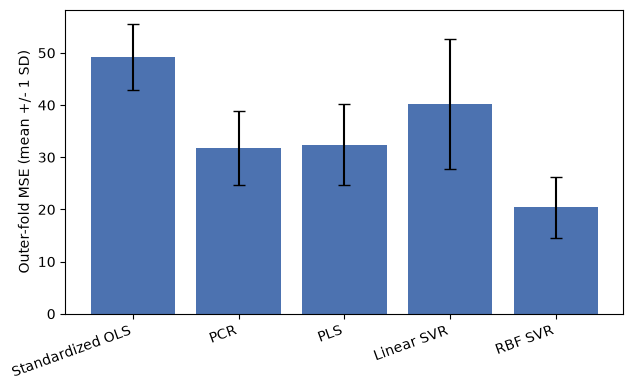

Exercise 9: Advanced Models#
Run or download this notebook
This page is fully readable as it is, and the interactive activities work here in the browser. To run or change the Python code, use the portable version of the notebook:
View or download the portable
.ipynbfor VS Code or Jupyter
The portable notebook keeps every Python analysis cell and swaps each embedded activity for a link back to this page.
What this notebook covers#
This is Exercise 9 of Machine Learning for Neuroscience. A complete prediction pipeline has already appeared several times in this course, so this notebook focuses on what is new: four additional models and the ideas behind them.
In this notebook you will:
compare principal component regression (PCR) with partial least squares (PLS);
connect SVM margins and support vectors to classification and regression;
explore how kernels create nonlinear models;
compare advanced models on the same ABIDE-II age-prediction task.
1. Why Consider More Advanced Models?#
Neuroimaging predictors are numerous and correlated, so the information that actually predicts an outcome may live in a much lower-dimensional structure than the raw feature count suggests. That structure is not always linear, and different models preserve and use information from the same predictors differently – one model’s useful signal can be another model’s discarded noise.
Think first
If two models receive the same participants and features, why can they produce different predictions even when both are evaluated correctly?
2. Principal Component Regression#
Principal component regression (PCR) means ordinary linear regression using principal-component scores as predictors, in place of the original features:
Pipeline([
("scale", StandardScaler()),
("pca", PCA(n_components=...)),
("model", LinearRegression()),
])
Exercise 8 already used PCA before a model; PCR is the same idea before linear regression specifically, so it inherits PCA’s own properties:
PCA chooses directions that explain variation in
X, without ever seeing the target.The number of retained components is a model parameter, chosen the same way any other model parameter is chosen.
StandardScalerandPCAmust both be fitted inside each validation fold, never once on the full dataset beforehand.PCR can reduce noise and collinearity in highly correlated predictors, but it can also discard a low-variance direction that happens to predict the target well – PCA has no way to know that in advance.
3. Partial Least Squares#
Partial least squares (PLS) regression also builds a small number of
components from many correlated predictors, but constructs them
differently: PCR’s components summarize variation in the predictors alone,
while PLS’s components are constructed using the relationship between the
predictors and the target. As a result, PLS can prioritize a direction that
explains relatively little variance in X but relates strongly to the
target – exactly the direction PCR is at risk of discarding.
Because PLS’s components are built using the target, fitting PLS is supervised: the complete PLS fit – not just the final linear step – must happen inside each training fold, never before a train/validation split.
Pipeline([
("scale", StandardScaler()),
# scale=False: the outer StandardScaler already standardized the
# predictors, so PLSRegression's own internal scaling is turned off
# here to avoid silently scaling twice.
("model", PLSRegression(n_components=..., scale=False)),
])
The number of PLS components is chosen using training/development data only, the same way as any other model parameter.
4. Interactive Activity – PCR or PLS?#
All three presets below share the same signal strength and the same noise level; only the direction of the predictive signal changes. That keeps validation performance directly comparable across presets: PCR does best when that direction lines up closely with PC1, and PLS can help most when the predictive information lies away from the highest-variance direction.
A few questions worth exploring with the controls above (predict your answer, then check it against what the activity shows):
With one component, why can PLS outperform PCR?
Why do PCR and PLS become more similar after both original directions are retained?
Does a component that explains more predictor variance necessarily predict the target better?
Why would fitting PLS before the train/validation split be especially problematic?
5. Support Vector Machines#
A support vector machine (SVM) for classification looks for a
separating boundary between classes with the largest possible margin –
the distance from the boundary to the closest training observations on
either side. Those closest observations are the support vectors: they
are the only training points that determine where the boundary sits: moving
any other observation, as long as it stays on the correct side of the
margin, would not change the fitted boundary at all. SVC fits this
boundary for classification; SVR fits a regression version, where instead
of a class margin, predictions within an epsilon-insensitive tube around
the observed value are not penalized at all. Because both depend on
distances and margins, scaling the predictors first is a requirement, not
an option, exactly as it was for KNN.
Parameter |
Student-facing meaning |
|---|---|
|
How strongly the model penalizes errors or margin violations |
|
How much regression error is tolerated before a penalty is applied |
|
The type of relationship the model can represent |
|
How local and flexible an RBF relationship can become |
Direct interpretations:
smaller
C: more regularization and greater tolerance for margin violations or training errors;larger
C: stronger pressure to fit every training observation, even at the cost of a narrower margin;larger RBF
gamma: a more local, potentially more complex boundary.
6. Kernels and Nonlinear Boundaries#
A kernel acts like a similarity rule that lets an SVM represent a richer boundary without explicitly constructing every transformed feature. Three kernels matter here:
linear: the boundary is a straight line (or, in more than two dimensions, a flat plane);
polynomial: a brief mention – curves the boundary using a fixed polynomial degree;
radial basis function (RBF): the main nonlinear kernel used in practice, capable of representing boundaries with no fixed shape at all.
7. Interactive Activity – Explore an SVM Boundary#
This activity is conceptual exploration, not a final model-selection procedure – a few questions worth exploring with the controls above:
Why can the linear kernel not separate the nonlinear dataset well?
What happens when
Cbecomes very large?What happens when RBF
gammabecomes very large?Which settings create a boundary that follows individual training observations too closely?
Why does perfect training accuracy not establish that the model is better?
SVR uses the same ideas for a continuous outcome such as age, replacing
the classification margin with an epsilon-insensitive regression
objective.
8. Comparing Advanced Models on ABIDE-II#
We return to the familiar ABIDE-II age-prediction task – the same 1,004 eligible participants and 360 cortical-thickness features every other exercise uses – and compare five models under one shared, reproducible nested cross-validation structure: identical outer folds for every model’s generalization estimate, identical inner-fold assignments wherever a model has a hyperparameter to select, all preprocessing inside each model’s pipeline, inner selection by mean cross-validation MSE, and outer-fold MSE/R-squared as the only reported generalization estimate. This reuses Exercise 4’s own nested-cross-validation procedure rather than reteaching it here – an inner loop selects hyperparameters using only the outer-training data, and the outer loop evaluates that complete procedure on data the inner loop never saw.
The five models:
standardized ordinary linear regression, as a familiar reference;
PCR;
PLS regression;
linear SVR;
RBF SVR.
No test-set result is selected after viewing these comparisons – the outer-fold numbers below are exactly what nested cross-validation produced.
Before looking at the results below, it is worth predicting them:
Which method do you expect to perform best?
Is the RBF model guaranteed to improve performance?
What would it mean if several models have overlapping fold-to-fold results?
data table: 1004 participants x 360 cortical-thickness predictors
# By default this notebook loads the already-computed nested
# cross-validation results below instantly. Set this to True and rerun
# the notebook to reproduce the full comparison from scratch, which
# typically takes a few minutes.
RUN_FULL_NESTED_CV = False
By default, the results below load instantly from an already-computed
run of the identical procedure; rerunning it from scratch (set
RUN_FULL_NESTED_CV = True above) typically takes a few minutes.
print("mean outer-fold performance (5 outer folds, nested cross-validation):")
display(summary.round(3))
for name, row in summary.iterrows():
print(f"{name:20s} mean MSE = {row['mean_mse']:.1f} mean R2 = {row['mean_r2']:+.3f}")
fig, ax = plt.subplots(figsize=(6.5, 4))
ax.bar(summary.index, summary["mean_mse"], yerr=summary["sd_mse"], capsize=4, color="#4c72b0")
ax.set_ylabel("Outer-fold MSE (mean +/- 1 SD)")
ax.set_xticks(range(len(summary.index)))
ax.set_xticklabels(summary.index, rotation=20, ha="right")
plt.tight_layout()
plt.show()
mean outer-fold performance (5 outer folds, nested cross-validation):
| mean_mse | sd_mse | mean_r2 | |
|---|---|---|---|
| model | |||
| Standardized OLS | 49.136 | 6.312 | 0.427 |
| PCR | 31.745 | 7.040 | 0.638 |
| PLS | 32.420 | 7.709 | 0.632 |
| Linear SVR | 40.276 | 12.443 | 0.552 |
| RBF SVR | 20.378 | 5.796 | 0.772 |
Standardized OLS mean MSE = 49.1 mean R2 = +0.427
PCR mean MSE = 31.7 mean R2 = +0.638
PLS mean MSE = 32.4 mean R2 = +0.632
Linear SVR mean MSE = 40.3 mean R2 = +0.552
RBF SVR mean MSE = 20.4 mean R2 = +0.772

Selected hyperparameters per outer fold
The exact hyperparameter(s) inner cross-validation selected for each tuned
model, per outer fold, are available by setting RUN_FULL_NESTED_CV = True
above and rerunning the notebook (fold_results[["model", "outer_fold", "selected_params"]]) – kept out of the main page to keep this section
readable, but never hidden from the runnable code. On this cohort and
split, the selection was stable across every outer fold: PCR consistently
chose 50 components, PLS consistently chose 5 components, linear SVR chose
C=0.1, epsilon=2 (from the corrected C grid [0.01, 0.1, 1], with the
nonconvergent C=10 removed), and RBF SVR chose C=100, gamma="scale"
with epsilon fixed at 1 year throughout.
On this cohort and split, RBF SVR reaches the lowest outer-fold error (mean MSE=20.4, R-squared=+0.77) and clearly separates from every other model across all 5 outer folds. PCR (mean MSE=31.7, R-squared=+0.64) and PLS (mean MSE=32.4, R-squared=+0.63) perform almost identically here – a concrete instance of the earlier guiding question about overlapping fold-to-fold results: neither method meaningfully beats the other on this task, even though they construct their components differently. Linear SVR (mean MSE=40.3, R-squared=+0.55) does better than plain standardized OLS (mean MSE=49.1, R-squared=+0.43) but worse than either dimensionality- reduction method, and OLS on the full 360 correlated features remains the weakest model, consistent with Exercise 8’s own supervised-pipeline result.
This is reported as the observed result for this cohort and split, not a general ranking – a different dataset or a different feature set could change which model wins, and RBF’s advantage here does not establish that kernel methods always outperform linear ones.
9. Strengths, Weaknesses, and Appropriate Uses#
Method |
Useful when |
Main limitation |
|---|---|---|
PCR |
Features are numerous and correlated |
Components ignore the target |
PLS |
Predictive information may not follow the highest-variance directions |
Target-aware components can overfit |
Linear SVM/SVR |
Many features and an approximately linear relationship |
Scaling and parameter selection matter |
Kernel SVM/SVR |
A nonlinear relationship is plausible and the sample is not enormous |
Less interpretable and increasingly expensive as the sample grows |
Model choice also depends on interpretability, sample size, computational cost, and the scientific question being asked – not on validation score alone.
10. Test-Oriented Thinking Questions#
Why must PCA and PLS be fitted inside each validation fold?
When might PLS outperform PCR?
Why can PCR discard a direction useful for prediction?
What generally happens when
Cincreases?How can a very large RBF
gammalead to overfitting?Why does an RBF kernel not guarantee better validation performance?
What makes a training observation a support vector?
Why must all compared models use the same outer folds?
If two models have similar scores, what other considerations guide the choice?
Why is selecting and evaluating a model on the same validation results optimistic?
Check your reasoning for the central concepts#
1. Why must PCA and PLS be fitted inside each validation fold?
Fitting either one on the full dataset before splitting lets information from validation rows leak into preprocessing – the components would be built partly from data the model is later “tested” on, making the validation estimate optimistic even though neither method directly uses the target during prediction.
4. What generally happens when C increases?
The model is pushed to fit training observations more closely, tolerating
fewer margin violations or regression errors – training error typically
falls, but an excessively large C can overfit noise in the training data
and hurt validation performance.
6. Why does an RBF kernel not guarantee better validation performance?
A more flexible boundary can fit the training data’s actual structure better, or it can fit noise specific to that training sample. Whether RBF helps depends on whether the true relationship is nonlinear and whether enough data supports the extra flexibility – neither is guaranteed just because the kernel is available.
7. What makes a training observation a support vector?
A training observation is a support vector if it lies on or inside the margin (or, for a soft margin, is misclassified or violates the margin) – these are the only points whose position actually constrains where the boundary sits.
10. Why is selecting and evaluating a model on the same validation results optimistic?
Choosing whichever candidate looks best on a set of scores capitalizes on that set’s own particular noise, so the chosen model’s reported score reflects a small amount of favorable luck on that split, not only genuine generalization – the same reasoning nested cross-validation’s outer loop exists to correct for.
11. Main Takeaways#
PCR uses PCA components without allowing the target to influence them.
PLS constructs components using the predictor-target relationship.
SVMs base their solution on support vectors and regularized margins.
Kernels let SVMs represent nonlinear relationships.
Greater flexibility can help, but it can also overfit.
Fair model comparison requires the same nested validation procedure for every model compared.